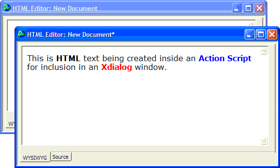

HTML Editor Style Xdialog
The Xdialog Genie (within the Action Scripting Editor ) has always made it easy to develop or prototype Xdialog boxes. The Xdialog Genie supports an HTML ActiveX control. This allows you to create Xdialog boxes using the incredible richness of HTML formatting.

Just as with other control types, the genie lets you set all the important variables, then generates a finished Xdialog box. Available options include:
The source of the HTML: it can be static, from a file, from an expression, from a pre-defined URL, or from a URL defined by an expression.
Hyperlinks: can be enabled or disabled
ActiveX Events: can be exposed or hidden
Border style
Scroll bars
Dialog title
Header text
Footer Text
Button Text
See Also